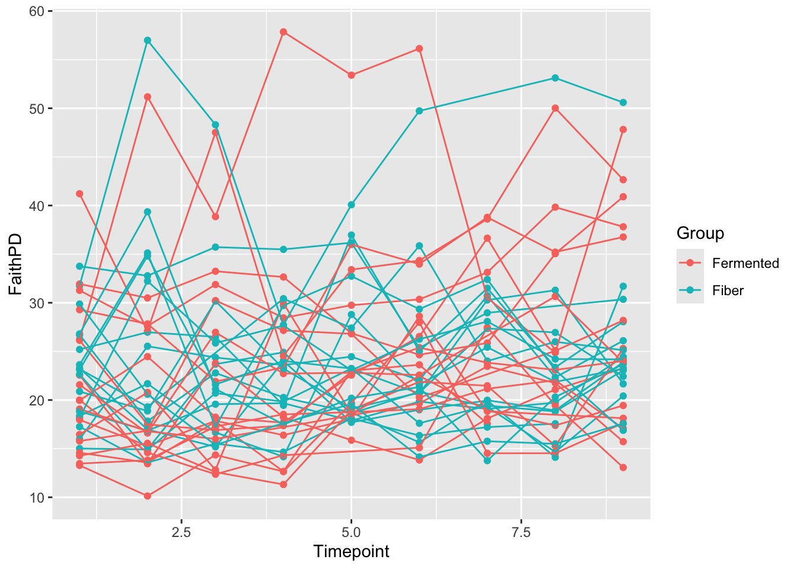
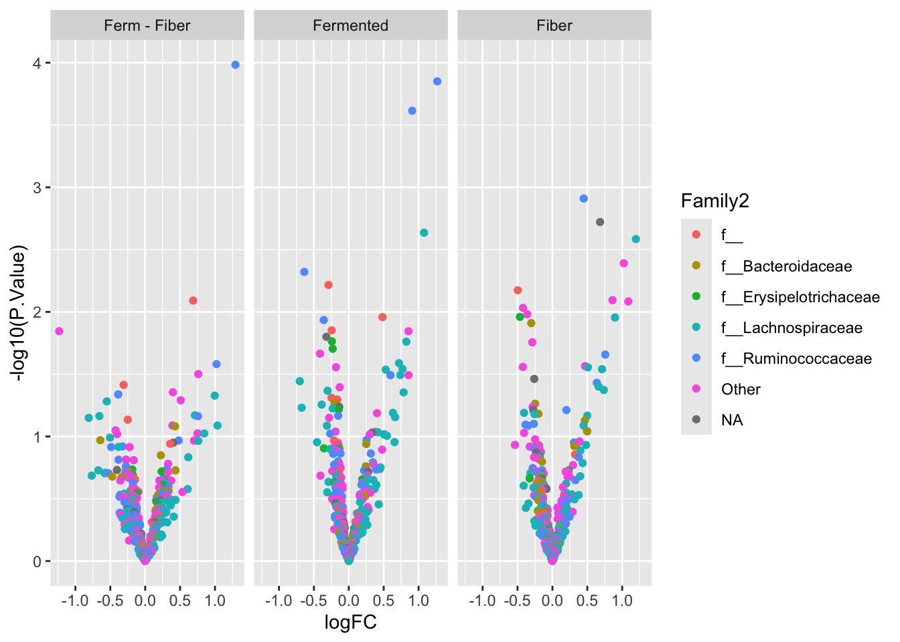
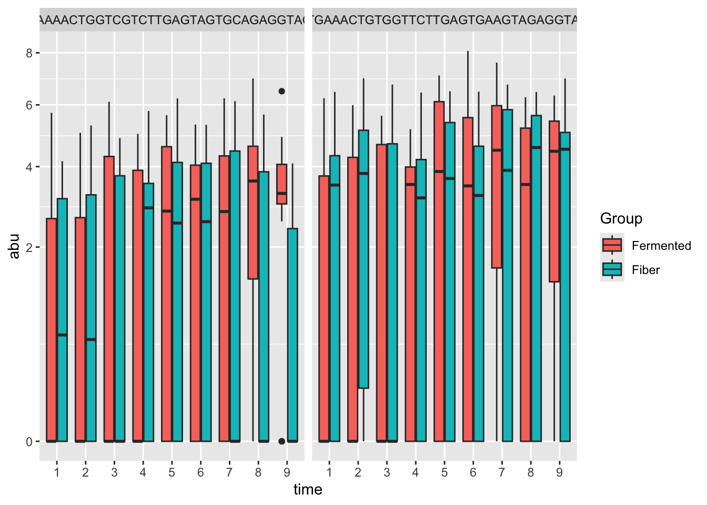

Differential Abundance for Repeated measures
In a fair part of practical research designs including repeated sampling of the same individual occur. This is statistically a powerfull way to do research, as the effect of some pertubation (diet, medication, etc) is contrasted in the same individual. Usually, a measure at baseline is available, and then one or several after an intervention. Sometimes cross over designs is used, such that each individual is undergoing all treatments in the experiment.
Modelling these data is in statistics refered to as mixed models. Mixed, due to the model having several terms modelling the random variation. For single univariate models, the nlme or lme4 package has the functionallity. For multivariate analysis such as for the microbiome, there are dedicated methods which, as for the metagenomeSeq and DESeq2 methods, has parameter shrinkage to robustify the results. Here we use the dream framework (from Bioconductor).
Example data
The sausage intervention data is an example of repeated measures with baseline and after intervention data.
library(tidyverse)
library(phyloseq)
library(variancePartition)
library(edgeR)
library(BiocParallel)
load('./data/Rats_inulin.RData')
phyX## phyloseq-class experiment-level object
## otu_table() OTU Table: [ 480 taxa and 59 samples ]
## sample_data() Sample Data: [ 59 samples by 15 sample variables ]
## tax_table() Taxonomy Table: [ 480 taxa by 7 taxonomic ranks ]
## phy_tree() Phylogenetic Tree: [ 480 tips and 477 internal nodes ]metadata <- phyX %>% sample_data()
table(metadata$time,metadata$ID)##
## F1 F10 F11 F12 F13 F14 F15 F16 F17 F18 F19 F2 F20 F21 F22 F23 F24 F25
## Slut 0 1 1 1 1 1 1 1 1 1 1 1 1 1 1 1 1 1
## Start 1 1 1 1 1 1 1 1 1 1 1 1 1 1 1 1 1 1
##
## F26 F27 F28 F29 F3 F30 F4 F5 F6 F7 F8 F9
## Slut 1 1 1 1 1 1 1 1 1 1 1 1
## Start 1 1 1 1 1 1 1 1 1 1 1 1table(paste(metadata$Description,metadata$ID),metadata$time)##
## Slut Start
## Chow F1 0 1
## Chow F13 1 1
## Chow F15 1 1
## Chow F20 1 1
## Chow F21 1 1
## Chow F22 1 1
## Frankfurter F10 1 1
## Frankfurter F11 1 1
## Frankfurter F12 1 1
## Frankfurter F17 1 1
## Frankfurter F2 1 1
## Frankfurter F24 1 1
## Frankfurter F25 1 1
## Frankfurter F29 1 1
## Frankfurter F3 1 1
## Frankfurter F4 1 1
## Frankfurter F6 1 1
## Frankfurter F8 1 1
## Frankfurter+inulin F14 1 1
## Frankfurter+inulin F16 1 1
## Frankfurter+inulin F18 1 1
## Frankfurter+inulin F19 1 1
## Frankfurter+inulin F23 1 1
## Frankfurter+inulin F26 1 1
## Frankfurter+inulin F27 1 1
## Frankfurter+inulin F28 1 1
## Frankfurter+inulin F30 1 1
## Frankfurter+inulin F5 1 1
## Frankfurter+inulin F7 1 1
## Frankfurter+inulin F9 1 1Here, the time==Start indicates pre-diet intervention, and hence here the rats should be similar regardless of diet.
The model for the responses (the abundance of the microbiome) is:
\[ y_i = a(time_i) + b(time_i,diet_i) +\kappa(ID_i) + e_i\] Here \(a\) and \(b\) describes the effect of time and time and diet in combination, while \(\kappa\) reflects the difference between individual Rats, and \(e\) reflects the residual uncertainty.
Setup the data
phyX <- phyX %>% subset_samples(ID!='F1') # remove the F1 rat with no slut data.
otutb <- as.data.frame(phyX@otu_table )
metadata <- phyX %>% sample_data() %>% data.frame() %>%
mutate(Diet = gsub('[[:punct:]]','',Description)) # we need to remove the + from the Description coloumn.
GM = DGEList(otutb)
GM = calcNormFactors( GM)
# Specify parallel processing parameters
# this is used implicitly by dream() to run in parallel
param = SnowParam(4, "SOCK", progressbar=TRUE)Specify the model
# The variable to be tested must be a fixed effect
# form <- ~ time + time:Diet + (1|ID)
form <- ~ 0 + time:Diet + (1|ID)Run the model
# estimate weights using linear mixed model of dream
vobjDream = voomWithDreamWeights( GM, form, metadata, BPPARAM=param )
# Fit the dream model on each gene
# By default, uses the Satterthwaite approximation for the hypothesis test
fitmm = dream( vobjDream, form, metadata )
fitmm = eBayes(fitmm)Look at the results
topTable( fitmm) %>% data.frame() %>% rownames_to_column('asv')## asv timeSlut.DietChow timeStart.DietChow timeSlut.DietFrankfurter
## 1 OTU_372 13.825272 14.44325 16.350681
## 2 OTU_3 14.277123 14.86154 16.717883
## 3 OTU_14 9.730454 10.65863 14.601279
## 4 OTU_51 10.745896 11.46514 10.236039
## 5 OTU_19 14.408681 13.52770 8.909757
## 6 OTU_4 13.206092 15.21415 13.989912
## 7 OTU_11 14.922619 14.65879 7.675523
## 8 OTU_431 13.114981 12.64798 7.995959
## 9 OTU_306 13.636541 12.95483 12.045826
## 10 OTU_13 12.522803 13.23759 12.711333
## timeStart.DietFrankfurter timeSlut.DietFrankfurterinulin
## 1 14.20794 15.115094
## 2 14.68724 15.501351
## 3 10.07538 13.750277
## 4 11.29011 10.225030
## 5 14.36788 5.167834
## 6 15.91445 13.369206
## 7 14.38631 4.287265
## 8 13.43585 5.947968
## 9 12.76416 12.901823
## 10 13.87313 12.428481
## timeStart.DietFrankfurterinulin AveExpr F P.Value adj.P.Val
## 1 14.39189 14.86067 1509.4112 9.918514e-65 4.760887e-62
## 2 14.82856 15.28019 1468.9729 2.270717e-64 5.449722e-62
## 3 10.26513 11.82757 1001.6910 2.625144e-59 4.200230e-57
## 4 11.27411 10.82088 931.5230 2.384366e-58 2.861240e-56
## 5 14.31967 11.27606 905.1637 5.700295e-58 5.472283e-56
## 6 15.48022 14.60381 852.4721 3.518427e-57 2.814742e-55
## 7 14.92897 11.09418 841.6390 5.185987e-57 3.556105e-55
## 8 13.37876 10.66977 834.6124 6.687445e-57 3.858178e-55
## 9 12.89817 12.73914 832.4529 7.234084e-57 3.858178e-55
## 10 14.07141 13.19170 807.0987 1.847908e-56 8.869959e-55
## F.std
## 1 52.26774
## 2 51.98809
## 3 48.04994
## 4 47.30412
## 5 47.00946
## 6 46.39404
## 7 46.26285
## 8 46.17686
## 9 46.15029
## 10 45.83312This is overall effects. Obviously, diet changes the microbiome. However, what we are interested in is the contrasts.
Contrasts
This is refered to as contrasts. I.e. compare the effect from Start to Slut for Frankfurter with the same for chow; A change versus a change or also known as Differences in Differences
This is specified using the coloumn names from the output above. Here the effect of Frankfurter is compare to the control diet (Chow).
In the specification of the model above, we include 0 to remove the intercept, and : to avoid main effects in the interactionmodel. That produce an output from the the 2 x 3 design as just the flat means for each of the 6 groups (more or less). Establishing a difference from start to end of trial is hence a contrast of two terms, while a difference of differences is made up by four terms.
L = makeContrastsDream( form, metadata,
contrasts = c("timeSlut.DietFrankfurter - timeStart.DietFrankfurter -
timeSlut.DietChow + timeStart.DietChow",
"timeSlut.DietFrankfurterinulin -
timeStart.DietFrankfurterinulin -
timeSlut.DietChow + timeStart.DietChow"))
dimnames(L)[2]$Contrasts <- c('C_FF','C_Inulin') # the labels are tooo long, so here shorter versions
plotContrasts(L)
0.1 Fit the model
fit = dream( vobjDream, form, metadata, L)
fit = eBayes(fit)0.2 Extract results and plot it
res_Frankfurter <- topTable( fit, coef="C_FF", number=1000) # we just export all
res_Inulin <- topTable( fit, coef="C_Inulin", number=1000) # we just export all
TXtab <- phyX %>% tax_table() %>% data.frame() %>% # export TAxtable to glue onto results
rownames_to_column('otu')
res <- bind_rows(res_Frankfurter %>% mutate(contrast = 'Frankfurter vs Chow') %>% rownames_to_column('otu'),
res_Inulin %>% mutate(contrast = 'FFinulin vs FF') %>% rownames_to_column('otu')) %>%
left_join(TXtab, by = 'otu') # add Taxinfo
ggplot(data = res, aes(logFC, -log10(P.Value), label = otu, color = Rank2)) +
geom_point() +
geom_text(data = res[res$P.Value<0.000001,]) +
facet_wrap(~contrast)
… Lets plot one example OTU_6
data.frame(metadata,otusel = as.numeric(otutb['OTU_6',])) %>%
ggplot(data =., aes(time,otusel + 1)) + geom_boxplot() +
geom_line(aes(group = ID)) +
scale_y_log10() +
facet_wrap(~Diet)
1 Another Example
The study Wastyk, H. C., Fragiadakis, G. K., Perelman, D., Dahan, D., Merrill, B. D., Feiqiao, B. Y., … & Sonnenburg, J. L. (2021). Gut-microbiota-targeted diets modulate human immune status. Cell, 184(16), 4137-4153. has put all their data out on github
try downloading the phyloseq_obj_PilotStudy_log.rds from the data/16S folder and import it into R
phyX <- readRDS('../MicrobiomeDataAnalysis/_site/data/phyloseq_obj_PilotStudy_log.rds')
phyX## phyloseq-class experiment-level object
## otu_table() OTU Table: [ 2204 taxa and 311 samples ]
## sample_data() Sample Data: [ 311 samples by 15 sample variables ]
## tax_table() Taxonomy Table: [ 2204 taxa by 7 taxonomic ranks ]
## phy_tree() Phylogenetic Tree: [ 2204 tips and 2202 internal nodes ]… Take a look at the design
table(paste(phyX@sam_data$Participant,phyX@sam_data$Group), phyX@sam_data$Timepoint)##
## 1 2 3 4 5 6 7 8 9
## 8001 Fiber 1 1 1 1 1 1 1 1 1
## 8002 Fiber 1 1 1 1 1 1 1 1 1
## 8003 Fiber 1 1 1 1 1 1 1 0 1
## 8004 Fermented 1 1 1 1 1 1 1 1 1
## 8006 Fiber 1 1 1 1 1 1 1 1 1
## 8007 Fiber 1 1 1 1 1 1 1 1 1
## 8008 Fermented 1 1 1 1 1 1 1 1 1
## 8009 Fiber 1 1 1 1 1 1 1 1 1
## 8010 Fermented 1 1 1 1 1 1 1 0 0
## 8011 Fermented 1 1 1 1 1 1 1 0 1
## 8013 Fiber 1 1 1 1 1 1 1 1 1
## 8014 Fermented 1 1 1 1 1 1 1 1 1
## 8016 Fermented 1 1 1 1 1 1 1 1 0
## 8017 Fiber 1 1 1 1 1 1 1 1 1
## 8018 Fiber 1 1 1 1 1 1 1 1 0
## 8020 Fermented 1 1 1 1 1 1 1 1 1
## 8021 Fermented 1 1 1 1 1 1 1 1 1
## 8022 Fiber 1 1 0 1 1 1 1 1 1
## 8023 Fiber 1 1 1 1 1 1 1 1 1
## 8024 Fermented 1 1 1 1 1 1 0 1 1
## 8025 Fermented 1 1 1 1 1 1 1 1 1
## 8026 Fermented 1 1 1 1 0 1 1 1 1
## 8027 Fermented 1 1 1 1 1 1 1 1 1
## 8028 Fermented 1 1 1 1 1 1 1 1 1
## 8029 Fiber 1 1 1 1 1 1 1 1 1
## 8030 Fermented 1 1 1 1 1 1 0 1 1
## 8031 Fermented 1 1 1 1 1 1 1 1 1
## 8032 Fermented 1 1 1 0 0 1 1 1 1
## 8033 Fermented 1 1 1 1 1 1 1 1 1
## 8034 Fermented 1 1 1 1 1 1 1 1 1
## 8035 Fiber 1 1 1 1 1 1 0 1 1
## 8036 Fiber 1 1 1 1 1 1 1 1 1
## 8037 Fiber 1 1 1 1 1 1 1 1 1
## 8038 Fiber 1 1 1 1 1 1 1 1 1
## 8039 Fiber 1 1 1 1 1 1 1 1 1
## 8041 Fiber 1 1 1 1 1 1 1 1 1It is a two armed longitudinal study with up to 9 timepoints.
1.1 Mixed model on Alpha-div
Before doing bug-per-bug analysis, the microbiome is condensed into one vector and used as response in an univariate mixed model. For the sake of the example, we use Faith phylogenetic diversity index as alpha diversity measure.
library(picante)
FaithPD = picante::pd(samp = otu_table(phyX), tree = phy_tree(phyX), include.root = F)$PD
# combine with meta data
samdata <- data.frame(phyX@sam_data, FaithPD)
# plot it connecting the individuals with lines
ggplot(data = samdata, aes(Timepoint,FaithPD, group = Participant, color =Group)) + geom_point() + geom_line()
library(lme4)
library(lmerTest)
m <- lmer(data = samdata, FaithPD~factor(Timepoint)*Group + (1|Participant))
anova(m)## Type III Analysis of Variance Table with Satterthwaite's method
## Sum Sq Mean Sq NumDF DenDF F value Pr(>F)
## factor(Timepoint) 393.69 49.211 8 259.16 1.7071 0.09692 .
## Group 0.01 0.011 1 33.96 0.0004 0.98464
## factor(Timepoint):Group 340.87 42.608 8 259.16 1.4780 0.16533
## ---
## Signif. codes: 0 '***' 0.001 '**' 0.01 '*' 0.05 '.' 0.1 ' ' 1In line with the plot, there is not much of differences between groups and neither over time.
summary(m)## Linear mixed model fit by REML. t-tests use Satterthwaite's method [
## lmerModLmerTest]
## Formula: FaithPD ~ factor(Timepoint) * Group + (1 | Participant)
## Data: samdata
##
## REML criterion at convergence: 1960.4
##
## Scaled residuals:
## Min 1Q Median 3Q Max
## -3.4518 -0.5428 -0.0720 0.4869 3.2960
##
## Random effects:
## Groups Name Variance Std.Dev.
## Participant (Intercept) 48.04 6.931
## Residual 28.83 5.369
## Number of obs: 311, groups: Participant, 36
##
## Fixed effects:
## Estimate Std. Error df t value Pr(>|t|)
## (Intercept) 21.9456 2.0665 73.5945 10.620 <2e-16 ***
## factor(Timepoint)2 -1.1903 1.7897 258.9633 -0.665 0.5066
## factor(Timepoint)3 0.8624 1.7897 258.9633 0.482 0.6303
## factor(Timepoint)4 0.4622 1.8193 259.1284 0.254 0.7996
## factor(Timepoint)5 2.8129 1.8515 259.2646 1.519 0.1299
## factor(Timepoint)6 3.9653 1.7897 258.9633 2.216 0.0276 *
## factor(Timepoint)7 3.5815 1.8512 259.2301 1.935 0.0541 .
## factor(Timepoint)8 3.6992 1.8515 259.2640 1.998 0.0468 *
## factor(Timepoint)9 4.7000 1.8515 259.2640 2.538 0.0117 *
## GroupFiber 1.0736 2.9225 73.5945 0.367 0.7144
## factor(Timepoint)2:GroupFiber 3.6852 2.5311 258.9633 1.456 0.1466
## factor(Timepoint)3:GroupFiber -0.2041 2.5517 259.0286 -0.080 0.9363
## factor(Timepoint)4:GroupFiber -0.4851 2.5520 259.0472 -0.190 0.8494
## factor(Timepoint)5:GroupFiber -1.0513 2.5751 259.1191 -0.408 0.6834
## factor(Timepoint)6:GroupFiber -3.5729 2.5311 258.9633 -1.412 0.1593
## factor(Timepoint)7:GroupFiber -1.7441 2.5952 259.1621 -0.672 0.5022
## factor(Timepoint)8:GroupFiber -3.2237 2.5955 259.1795 -1.242 0.2153
## factor(Timepoint)9:GroupFiber -2.6493 2.5955 259.1795 -1.021 0.3083
## ---
## Signif. codes: 0 '***' 0.001 '**' 0.01 '*' 0.05 '.' 0.1 ' ' 1Looking at the random effect, we see that the variance related to individual is larger than the residual variation, meaning that there indeed is a lot of week to week variation conserved in the microbiome.
Lets try DA on this dataset. Here, all code in one go.
phyXsel <- phyX %>% filter_taxa(function(x) sum(x > 0)>20, TRUE)
otutb <- as.data.frame(phyXsel@otu_table)
metadata <- phyXsel %>% sample_data() %>% data.frame() %>%
mutate(time = Timepoint %>% factor())
GM = otutb %>% t() %>% DGEList()
GM = calcNormFactors(GM)
# Specify parallel processing parameters
# this is used implicitly by dream() to run in parallel
param = SnowParam(4, "SOCK", progressbar=TRUE)
form <- ~ 0 + time:Group + (1|Participant)
# estimate weights using linear mixed model of dream
vobjDream = voomWithDreamWeights( GM, form, metadata, BPPARAM=param )
# Fit the dream model on each gene
# By default, uses the Satterthwaite approximation for the hypothesis test
fitmm = dream( vobjDream, form, metadata )
fitmm = eBayes(fitmm)
# topTable( fitmm) %>% data.frame() %>% rownames_to_column('asv')
L = makeContrastsDream( form, metadata,
contrasts = c("time9.GroupFermented - time1.GroupFermented",
"time9.GroupFiber - time1.GroupFiber",
"time9.GroupFermented - time1.GroupFermented -
time9.GroupFiber + time1.GroupFiber"))
dimnames(L)[2]$Contrasts <- c('Eff_ferm','Eff_fiber','DDferm_fiber') # the labels are tooo long, so here shorter versions
# plotContrasts(L)
fit = dream( vobjDream, form, metadata, L)
fit = eBayes(fit)Collect results and plot
res_ferm <- topTable( fit, coef="Eff_ferm" ,number=1000) # we just export all
res_fiber <- topTable( fit, coef="Eff_fiber" ,number=1000)
res_dd <- topTable( fit, coef="DDferm_fiber" ,number=1000)
TXtab <- phyXsel %>% tax_table() %>% data.frame() %>% # export TAxtable to glue onto results
rownames_to_column('otu')
res <- bind_rows(res_ferm %>% mutate(contrast = 'Fermented') %>% rownames_to_column('otu'),
res_fiber %>% mutate(contrast = 'Fiber') %>% rownames_to_column('otu'),
res_dd %>% mutate(contrast = 'Ferm - Fiber') %>% rownames_to_column('otu')) %>%
left_join(TXtab, by = 'otu') # add Taxinfo
res %>%
mutate(Family2 = Family %>% factor() %>% fct_lump_n(5)) %>%
ggplot(data = ., aes(logFC, -log10(P.Value), label = otu, color = Family2)) +
geom_point() +
facet_wrap(~contrast)
res %>% arrange(adj.P.Val) %>%
select(logFC,P.Value,adj.P.Val, B, contrast, Class:Species) %>%
head(10)## logFC P.Value adj.P.Val B contrast
## 1 1.2932479 0.0001024946 0.03812800 0.3012888 Ferm - Fiber
## 2 1.2681159 0.0001362225 0.04467881 0.8456856 Fermented
## 3 0.9087402 0.0002402087 0.04467881 0.3662595 Fermented
## 4 1.0778592 0.0022566222 0.27982115 -1.5366659 Fermented
## 5 0.4486806 0.0013002741 0.31436161 -1.3313655 Fiber
## 6 0.6832015 0.0019131848 0.31436161 -1.7094167 Fiber
## 7 1.1965432 0.0025351743 0.31436161 -1.9659901 Fiber
## 8 1.0237319 0.0039914324 0.36911569 -2.2891173 Fiber
## 9 -0.4963649 0.0066550074 0.36911569 -2.4414255 Fiber
## 10 0.8612708 0.0079569592 0.36911569 -2.7410798 Fiber
## Class Order Family
## 1 c__Clostridia o__Clostridiales f__Ruminococcaceae
## 2 c__Clostridia o__Clostridiales f__Ruminococcaceae
## 3 c__Clostridia o__Clostridiales f__Ruminococcaceae
## 4 c__Clostridia o__Clostridiales f__Lachnospiraceae
## 5 c__Clostridia o__Clostridiales f__Ruminococcaceae
## 6 c__Clostridia o__Clostridiales <NA>
## 7 c__Clostridia o__Clostridiales f__Lachnospiraceae
## 8 c__Gammaproteobacteria o__Pasteurellales f__Pasteurellaceae
## 9 c__RF3 o__ML615J-28 f__
## 10 c__Clostridia o__Clostridiales f__[Mogibacteriaceae]
## Genus Species
## 1 g__Faecalibacterium s__prausnitzii
## 2 g__Ruminococcus s__
## 3 g__Faecalibacterium s__prausnitzii
## 4 g__Lachnospira s__
## 5 g__Faecalibacterium s__prausnitzii
## 6 <NA> <NA>
## 7 g__Roseburia s__
## 8 g__Haemophilus s__parainfluenzae
## 9 g__ s__
## 10 g__ s__Plot the top flyers
sel <- res %>% arrange(adj.P.Val) %>% head(3) # dig the strongest results out
# combine with meta data
xx <- otutb[,colnames(otutb) %in% sel$otu] %>%
data.frame() %>%
cbind(metadata)
# plot it
xx %>%
gather(otu,abu,-c(SampleID:time)) %>%
ggplot(data = ., aes(time,abu, fill = Group)) +
geom_boxplot() + scale_y_sqrt() +
facet_wrap(~otu)